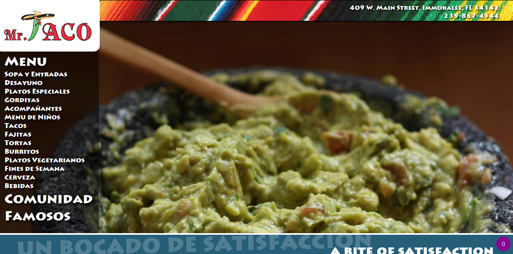
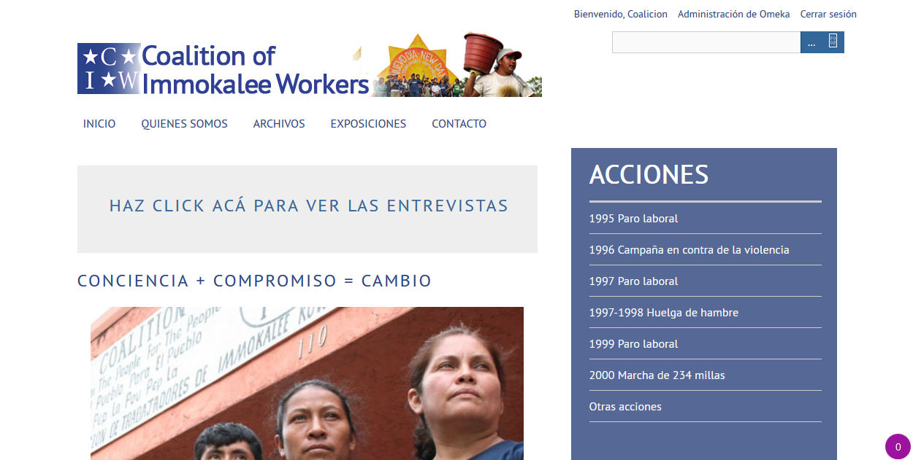

Estas son las páginas web que Daniel ha creado en el 2016. La primera la pertenece a un restaurante mexicano y está en procesos de ser terminada. La segunda le pertenece a la Coalición de Trabajadores de Immokalee. La página es exclusiva para los miembros de la Coalición. Sin embargo, la página principal y la página informativa de la organización pueden ser vistas por cualquier persona.
|  Mr. Taco: El mejor restaurante de Immokalee |
 Coalición Digital: El archivo de la CIW |